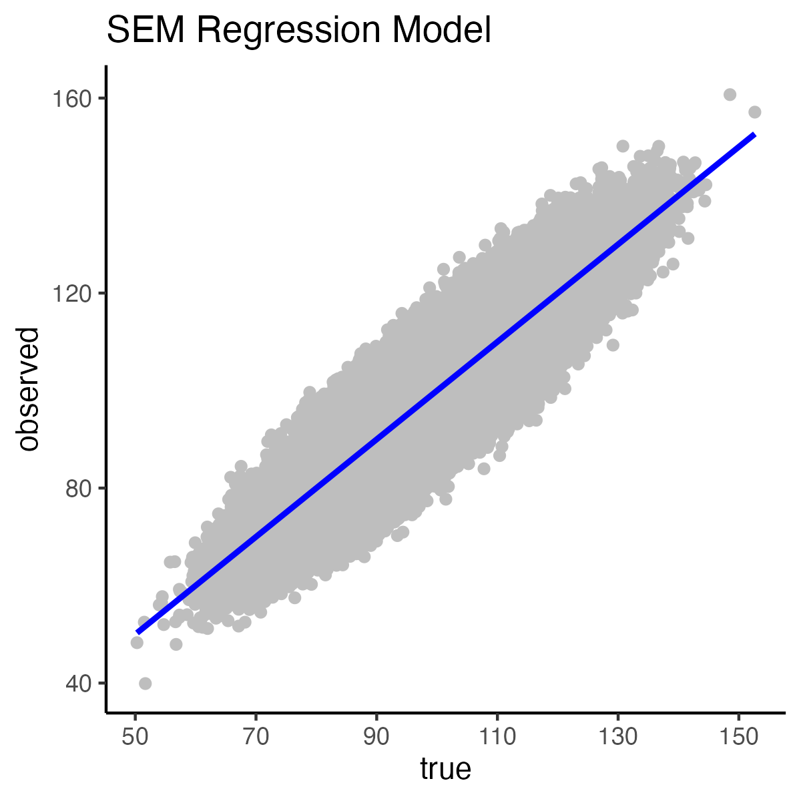
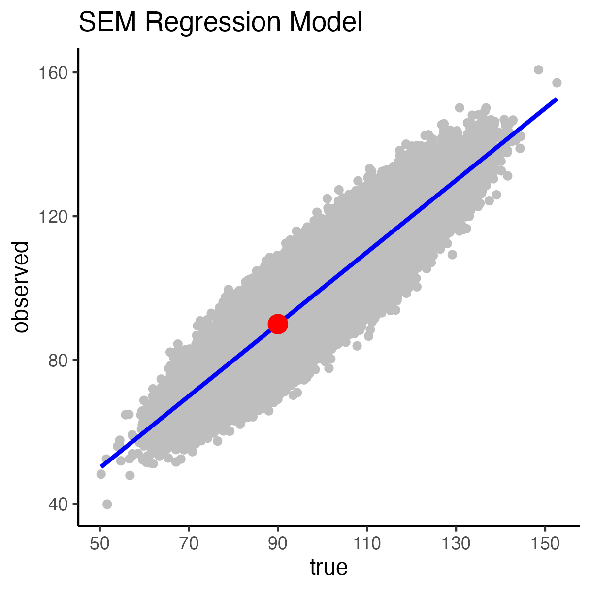
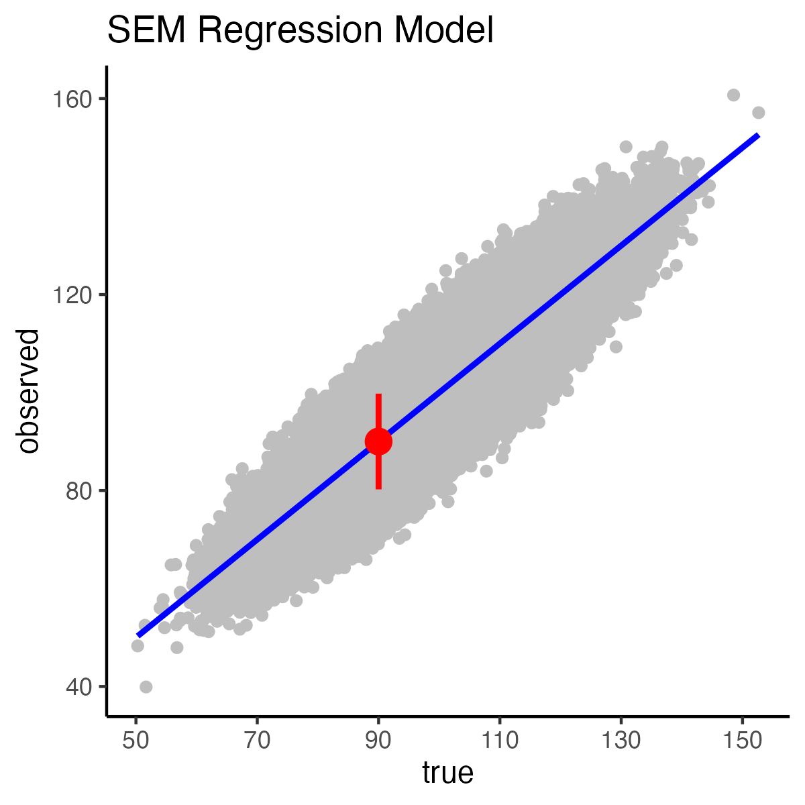
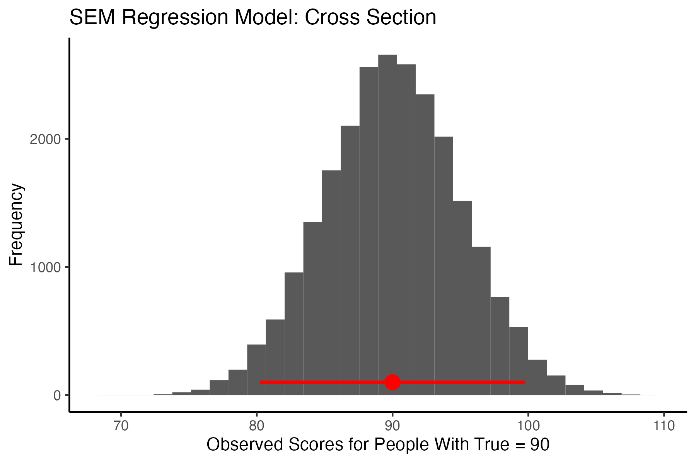
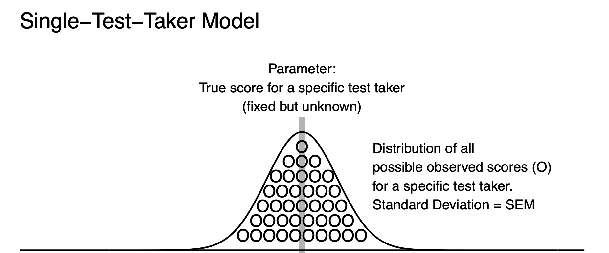

sem_model <- lm(observed ~ true)
print(sem_model)
Call:
lm(formula = observed ~ true)
Coefficients:
(Intercept) true
6.477e-12 1.000e+00 In this section, with the Standard Error of Measurement, we create a 95% SEM regression interval that will capture 95% of the observed scores for test takers with the same true score. In this demonstration we create a 95% SEM interval based on a true score of 90. We note, however, that true scores are unknown so this is strictly a theoretical interval.
In the next section (Single Test Taker: Standard Error of Measurement), we detail how to construct a 95% SEM confidence interval, based on a test taker’s observed score, that has a 95% chance of capturing their true score.
We begin by creating the Standard Error of Measurement regression model. In this model true scores predict observed scores. Again, recall that this is a conceptual model only - because we never know true scores. When inspecting the Standard Error of Measurement regression model notice the slope is 1.0 and the intercept is 0.
sem_model <- lm(observed ~ true)
print(sem_model)
Call:
lm(formula = observed ~ true)
Coefficients:
(Intercept) true
6.477e-12 1.000e+00 This output above indicates the regression equation:
\[ \hat{y}_{observed} = 1.0(x_{true}) + 0 \]
We graph the relation between true scores and observed scores with the code below. Warning: This make take a few minutes to plot.
# view model and predicted values
library(ggplot2)
example_df <- data.frame(true, observed)
ggplot(data = my_df,
mapping = aes(x = true,
y = observed)) +
geom_point(color = "grey") +
geom_smooth(method = lm,
formula = y ~ x,
color = "blue") +
ggtitle("SEM Regression Model") +
scale_x_continuous(breaks = seq(50, 150, by = 20)) +
theme_classic()
Because the slope of the Standard Error of Measurement Model is 1.0 (and the intercept is 0) it is easy to calculate a predicted score. Recall the predictor is true scores and the criterion is observed scores. The mean of the measurement errors is zero; consequently, the predicted observed score is simply the true score. Note, however, that the predicted observed score is the estimated mean of all observed score for individuals with the same (specified) true score.
When we create a Standard Error of Measurement interval for test takers, based on an true score of 90, it is centered on 90 because the expected mean observed score is equal to the true score.
This spot on the regression line is illustrated in the graph below by the red dot:
# view model and predicted values
library(ggplot2)
example_df <- data.frame(true, observed)
ggplot(data = my_df,
mapping = aes(x = true,
y = observed)) +
geom_point(color = "grey") +
geom_smooth(method = lm,
formula = y ~ x,
color = "blue") +
ggtitle("SEM Regression Model") +
scale_x_continuous(breaks = seq(50, 150, by = 20)) +
theme_classic() +
annotate(geom = "point",
x = 90, y = 90,
color = "red", size = 4)
The length of the interval depends on the standard deviation of the residuals around the corresponding spot on the regression line (i.e., the red dot in the graph above). Due to the homoscedasticity assumption the standard deviation of the residuals at that point is equal to the overall standard deviation of the residuals. We obtain the overall standard deviation of the residuals in R output by looking at “Residual Standard Error”. Notice that this value is 5 in the output below.
summary(sem_model)
Call:
lm(formula = observed ~ true)
Residuals:
Min 1Q Median 3Q Max
-23.8157 -3.3769 -0.0027 3.3766 23.8180
Coefficients:
Estimate Std. Error t value Pr(>|t|)
(Intercept) 6.477e-12 5.025e-02 0 1
true 1.000e+00 5.000e-04 2000 <2e-16 ***
---
Signif. codes: 0 '***' 0.001 '**' 0.01 '*' 0.05 '.' 0.1 ' ' 1
Residual standard error: 5 on 999998 degrees of freedom
Multiple R-squared: 0.8, Adjusted R-squared: 0.8
F-statistic: 4e+06 on 1 and 999998 DF, p-value: < 2.2e-16We can also get this value of 5 from the SEM-error formula:
sd_residual_sem = sd(observed)*sqrt( (1-rxx) )
print(sd_residual_sem)[1] 5In the regression output (above) the Standard Error of the Residuals is exactly 5. This value was alternatively calculated by the Standard Error of Measurement formula which provides a value of 5. Both of these correspond the standard deviation of the errors created in our simulation code from Create Demonstration Data (repeated below). In this code we created errors with a variance of 25 which is a standard deviation of 5.
# Mean of 100 for true score and mean of 0 for errors
means = c(100,0)
# Specify variances and covariances.
# A covariance of zero means the correlation between
# true scores and errors is zero. The 100 indicates a
# variance of 100 for true scores. The 25 indicates
# a variance of 25 for errors.
covariance_matrix = matrix(c(100,0, 0,25), nrow = 2)
# Create the score as per specifications
set.seed(1) # random number seed
scores <- mvrnorm(n = 1000000,
mu = means,
Sigma = covariance_matrix,
empirical = TRUE)
true <- scores[,1]
error <- scores[,2]
observed <- true + errorThus, Standard Error of Measurement is the standard deviation of the errors associated with true scores.
Recall that in the above activities we started with 90 as a true score but found that the expected mean observed score is also 90. Likewise, \(s_{residual}\) which determines the length of the interval is presented below:
print(sd_residual_sem)[1] 5We combine these values in Standard Error of Measurement regression interval equation.
We can calculate the lower limit of the interval:
semLL = 90 - 1.96 * sd_residual_sem
print(semLL)[1] 80.2Then calculate the upper limit of the interval:
semUL = 90 + 1.96 * sd_residual_sem
print(semUL)[1] 99.8The result is a 95% SEM [80.2, 99.8] interval. This interval is a range that indicates that for those test takers with an true score of 90 that 95% of them have observed scores between 80.2 and 99.8.
# view model and predicted values
library(ggplot2)
my_df <- data.frame(true, observed)
ggplot(data = my_df,
mapping = aes(x = true,
y = observed)) +
geom_point(color = "grey") +
geom_smooth(method = lm,
formula = y ~ x,
color = "blue") +
ggtitle("SEM Regression Model") +
scale_x_continuous(breaks = seq(50, 150, by = 20)) +
theme_classic() +
annotate(geom = "point",
x = 90, y = 90,
color = "red", size = 4) +
annotate(geom = "segment",
x = 90, xend = 90,
y = 80.2, yend = 99.8,
color = "red", linewidth = 1)
Unfortunately, the above graph makes it appear the 95% SEM interval falls far short of capturing 95% of the observed scores corresponding to the \(x-axis\) true score location of 90. This is occurs because the above plot does not convey the density of the points in the cross section where the interval falls on the graph.
However, if we take a cross section of the data at this point, we can see the interval does capture 95% of the points at this spot on the graph.
people_with_true_equal_90 <- round(true) == 90
my_df_hist <- data.frame(observed_scores = observed[people_with_true_equal_90])
ggplot(data = my_df_hist,
mapping = aes(x =observed_scores)) +
geom_histogram() +
xlab("Observed Scores for People With True = 90") +
ylab("Frequency") +
scale_x_continuous(breaks = seq(60, 110, by = 10)) +
ggtitle("SEM Regression Model: Cross Section") +
theme_classic() +
annotate(geom = "point",
x = 90, y = 100,
color = "red", size = 4) +
annotate(geom = "segment",
y = 100, yend = 100,
x = 80.2, yend = 99.8,
color = "red", linewidth = 1)
A visual inspection suggests the interval captures 95% of values. We can confirm our visual inspection of the above graph with a calculation:
people_with_true_equal_90 <- round(true) == 90
obs_scores_people_with_obs_equal_90 = observed[people_with_true_equal_90]
n_obs_scores_for_true_90 = length(obs_scores_people_with_obs_equal_90)
boolean_greater_LL <- obs_scores_people_with_obs_equal_90 >= semLL
boolean_less_UL <- obs_scores_people_with_obs_equal_90 <= semUL
boolean_in_interval <- boolean_greater_LL & boolean_less_UL
n_in_interval = sum(boolean_in_interval)
percent_true_in_interval = n_in_interval / n_obs_scores_for_true_90 * 100
print(percent_true_in_interval)[1] 94.85646Thus, the 95% SEM [80.22, 99.78] captures 95% of the observed scores for individuals with a true score of 90.
In the above section, we reviewed a conceptual interpretation of the SEM interval. We demonstrated that for a specified true score it was possible to create range of observed scores that might occur for a variety of test takers. However, because true scores are unknown the above Standard Error of Measurement interval for a regression model does not help a test taker interpret their specific test score. In this section, we focus on using a test takers observed score to create an interval that will capture their true score - a practical application of the Standard Error of Measurement error term.
Recall the Cross Section graph for the Standard Error of Measurement, above. This graph illustrates that the standard deviation of residuals, for those test takers with true score of 90, was the same as the standard deviation of residuals based on all test takers. In both cases, the standard deviation of observed scores from the model was the Standard Error of Measurement. The natural extension of this is that when one person has a true score of 90 that their observed scores will also have a standard deviation that corresponds to the Standard Error of Measurement. Moreover, the observed scores will have a standard deviation that corresponds to the Standard Error of Measurement regardless of the test taker’s true score. As a result, we can easily create a model of observed scores for a single person. For a single person, we imagine their true score as the mean of a population of observed scores. This interpretation corresponds to the definition of a true score in classical test theory. We also imagine a set of observed scores that have a standard deviation that corresponds to the Standard Error of Measurement (i.e., a value of 5).

If Bob has an observed score of 90, we can create
set.seed(1)
bob_true_score = 90
error <- as.numeric(scale(rnorm(n = 1000000)))*5
all_bob_observed_scores <- bob_true_score + errorWe can create a histogram of Bob’s observed scores that matches the theoretical graph above:
bob_df <- data.frame(all_bob_observed_scores)
ggplot(data = bob_df,
mapping = aes(x = all_bob_observed_scores)) +
geom_histogram(bins = 30) +
xlab("Distribution of Observed Scores for Bob") +
ylab("Frequency") +
scale_x_continuous(breaks = seq(60, 110, by = 10)) +
ggtitle("Bob's Observed Scores") +
theme_classic() +
annotate(geom = "segment",
y = 0, yend = 150000,
x = 90, xend = 90,
color = "red", linewidth = 1)
Typically, when we create an interval for a single person it is based on information from other test takers. Specifically, we use the reliability of observed scores and the standard deviation of observed score. Both of these are calculated based on data from other test takers.
We we created Bob’s distribution of observed scores we did so using the same error process as we did for the 1,000,000 test takers. Consequently, we use the information from the other test takers discussed previously to calculate Bob’s Standard Error of Measurement interval. Specifically, we use the reliability and standard deviation of observed scores from these other test takers:
# All test takers
print( sd(observed) )[1] 11.18034# All test takers
rxx = var(true) / var(observed)
print( rxx )[1] 0.8We can use this information to calculate the Standard Error of Measurement that we will use for Bob’s interval.
sem = sd(observed) * sqrt(1 - rxx)Now an interval for Bob is:
\[ observed \pm 1.96(SEM) \]
We can get a specific observed score from Bob:
bob_first_observed_score = all_bob_observed_scores[1]
print(bob_first_observed_score)[1] 86.86808Then, we create an interval centered on that observed score.
LL = bob_first_observed_score - 1.96*sem
print(LL)[1] 77.06808UL = bob_first_observed_score + 1.96*sem
print(UL)[1] 96.66808The resulting 95% SEM [77.07, 96.67] is an interval estimate of Bob’s true score. On average, 95% of the interval estimates will contain a person’s true score. Some people prefer to phrase this as, “With repeated measurement, on average, 19 of 20 (i.e., 95%) of interval estimates will contain the true score.” Consequently, this specific interval, 95% SEM [77.07, 96.67], may or may not contain Bob’s true score. A simulation that demonstrates this interpretation of the SEM confidence interval (based on an observed score) is provide in the Myth #1 section, below.